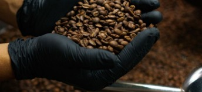
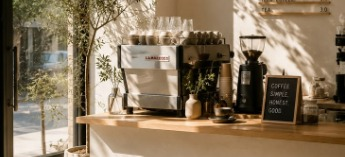

Trazabilidad
Cada producto indica el productor, la finca y hace cuántas generaciones esa familia cultiva el grano.
Sobre Raíz
Raíz es una cafetería de especialidad ubicada en Buenos Aires. Cada café que se sirve cuenta una historia: el origen del grano, el productor y el proceso de cultivo se comunican tanto en el local como en este sitio.

Tres ideas que sostienen la propuesta de Raíz

Cada producto indica el productor, la finca y hace cuántas generaciones esa familia cultiva el grano.

Madera clara, cemento pulido, ventanales de piso a techo y plantas. Espacios simples, sin objetos de más.

Mesas comunales pensadas para compartir, y encuentros mensuales de historia y café abiertos al público.